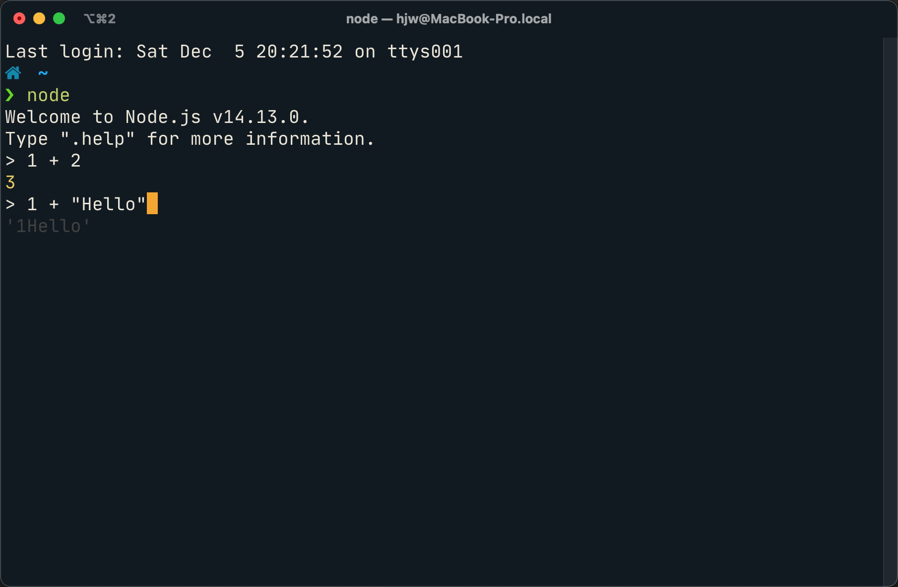
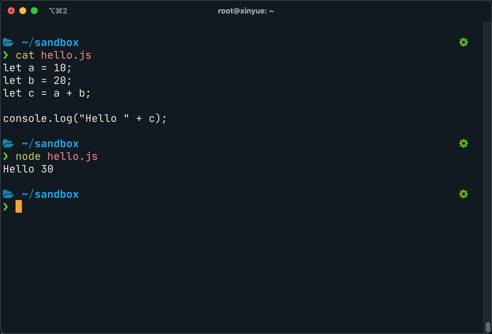
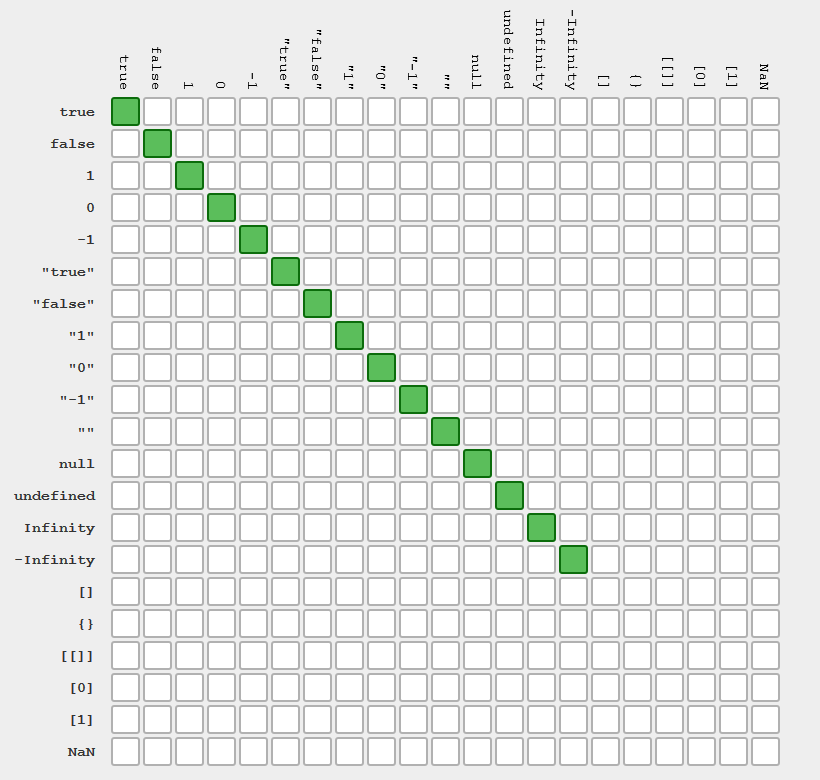

Javascript

1995年5月，Brendan Eich用10天设计完成了Javascript的第一版
Brendan Eich

安装
REPL
运行
浏览器
- Ctrl+Shift+J (Windows, Linux)或Cmd+Opt+J (Mac)
- 右键, inspect
Hello, World!
在Console中运行下列代码
document.getElementById('hello').textContent = 'Hello, Console!'
基本语法
注释
// 注释方式和C很像，这是单行注释
/* 这是多行
注释 */
语句
// 语句可以以分号结束
doStuff();
// 分号也可以省略，每当遇到一个新行时，分号会自动插入（除了一些特殊情况）
doStuff()
// 因为这些特殊情况会导致意外的结果，所以我们在这里保留分号。
算术运算
// Javascript 只有一种数字类型(即64位 IEEE 754双精度浮点double)。
// double 有 52 位表示尾数，足以精确存储大到 9✕10¹⁵ 的整数。
3; // = 3
1.5; // = 1.5
// 所有基本的算数运算都如你预期。
1 + 1; // = 2
0.1 + 0.2; // = 0.30000000000000004
8 - 1; // = 7
10 * 2; // = 20
35 / 5; // = 7
// 包括无法整除的除法。
5 / 2; // = 2.5
// 位运算也和其他语言一样；当你对浮点数进行位运算时，
// 浮点数会转换为*至多* 32 位的无符号整数。
1 << 2; // = 4
// 括号可以决定优先级。
(1 + 3) * 2; // = 8
// 有三种非数字的数字类型
Infinity; // 1/0 的结果
-Infinity; // -1/0 的结果
NaN; // 0/0 的结果
逻辑运算
// 布尔值。
true;
false;
// 用！来取非
!true; // = false
!false; // = true
// 相等 ===
1 === 1; // = true
2 === 1; // = false
// 不等 !=
1 !== 1; // = false
2 !== 1; // = true
// 更多的比较操作符
1 < 10; // = true
1 > 10; // = false
2 <= 2; // = true
2 >= 2; // = true
// 还有两个特殊的值：`null`和`undefined`
null; // 用来表示刻意设置的空值
undefined; // 用来表示还没有设置的值
// false, null, undefined, NaN, 0 和 "" 都是假的；其他都视作真
// 注意 0 是逻辑假而 "0"是逻辑真，尽管 0 == "0"。
字符串
// 可以通过单引号或双引号来构造字符串。
'abc';
"Hello, world";
// 字符串用+连接
"Hello " + "world!"; // = "Hello world!"
// 字符串也可以用 < 、> 来比较
"a" < "b"; // = true
// 你可以用`charAt`来得到字符串中的字符
"This is a string".charAt(0); // = 'T'
// ...或使用 `substring` 来获取更大的部分。
"Hello world".substring(0, 5); // = "Hello"
// `length` 是一个属性，所以不要使用 ().
"Hello".length; // = 5
弱类型
// 使用“==”比较时会进行类型转换...
"5" == 5; // = true
null == undefined; // = true
// ...除非你是用 ===
"5" === 5; // = false
null === undefined; // = false
// ...但会导致奇怪的行为
13 + !0; // 14
"13" + !0; // '13true'
var1 == var2

var1 === var2
变量
// 变量需要用`var`关键字声明。Javascript是动态类型语言，
// 所以你无需指定类型。 赋值需要用 `=`
var someVar = 5;
// 如果你在声明时没有加var关键字，你也不会得到错误...
someOtherVar = 10;
// ...但是此时这个变量就会在全局作用域被创建，而非你定义的当前作用域
// 没有被赋值的变量都会被设置为undefined
var someThirdVar; // = undefined
// 对变量进行数学运算有一些简写法：
someVar += 5; // 等价于 someVar = someVar + 5;
someVar *= 10; // 现在 someVar 是 100
// 自增和自减也有简写
someVar++; // someVar 是 101
someVar--; // 回到 100
数组
// 数组是任意类型组成的有序列表
var myarray = ["hello", 45, true];
// 数组的元素可以用方括号下标来访问。
// 数组的索引从0开始。
myarray[1]; // = 45
// 数组是可变的，并拥有变量 length。
myarray.push("world");
myarray.length; // = 4
// 在指定下标添加/修改
myarray[3] = "hello";
对象
// javascript中的对象相当于其他语言中的“字典”或“映射”
var myObj = {key1: "Hello", key2: "World"};
// 键是字符串，但如果键本身是合法的js标识符，则引号并非是必须的。
// 值可以是任意类型。
var myObj = {myKey: "myValue", "my other key": 4};
// 对象属性的访问可以通过下标
myObj["my other key"]; // = 4
// ... 或者也可以用 . ，如果属性是合法的标识符
myObj.myKey; // = "myValue"
// 对象是可变的；值也可以被更改或增加新的键
myObj.myThirdKey = true;
// 如果你想要获取一个还没有被定义的值，那么会返回undefined
myObj.myFourthKey; // = undefined
条件语句
// `if`语句和其他语言中一样。
var count = 1;
if (count == 3){
// count 是 3 时执行
} else if (count == 4){
// count 是 4 时执行
} else {
// 其他情况下执行
}
// && 是逻辑与, || 是逻辑或
if (house.size == "big" && house.colour == "blue"){
house.contains = "bear";
}
if (colour == "red" || colour == "blue"){
// colour是red或者blue时执行
}
switch
// `switch`语句使用`===`检查相等性。
// 在每一个case结束时使用 'break'
// 否则其后的case语句也将被执行。
grade = 'B';
switch (grade) {
case 'A':
console.log("Great job");
break;
case 'B':
console.log("OK job");
break;
case 'C':
console.log("You can do better");
break;
default:
console.log("Oy vey");
break;
}
循环
// while循环
while (true) {
// 无限循环
}
// Do-while 和 While 循环很像 ，但前者会至少执行一次
var input;
do {
input = getInput();
} while (!isValid(input))
// `for`循环和C、Java中的一样：
// 初始化; 继续执行的条件; 迭代。
for (var i = 0; i < 5; i++){
// 遍历5次
}
函数
// JavaScript 函数由`function`关键字定义
function myFunction(thing){
return thing.toUpperCase();
}
myFunction("foo"); // = "FOO"
// 注意被返回的值必须开始于`return`关键字的那一行，
// 否则由于自动的分号补齐，你将返回`undefined`。
// 在使用Allman风格的时候要注意.
function myFunction()
{
return // <- 分号自动插在这里
{
thisIsAn: 'object literal'
}
}
myFunction(); // = undefined
// javascript中函数是一等对象，所以函数也能够赋给一个变量，
// 并且被作为参数传递 —— 比如一个事件处理函数：
function myFunction(){
// 这段代码将在5秒钟后被调用
}
setTimeout(myFunction, 5000);
// 注意：setTimeout不是js语言的一部分，而是由浏览器和Node.js提供的。
// 函数对象不需声明名称 —— 可以直接把一个函数定义写到另一个函数的参数中
setTimeout(function(){
// 这段代码将在5秒钟后被调用
}, 5000);
作用域
// JavaScript 有函数作用域；函数有其自己的作用域而其他的代码块则没有。
if (true){
var i = 5;
}
i; // = 5 - 并非我们在其他语言中所期望得到的undefined
// 这就导致了人们经常使用的“立即执行匿名函数”的模式，
// 这样可以避免一些临时变量扩散到全局作用域去。
(function(){
var temporary = 5;
// 我们可以访问修改全局对象
// （"global object"）来访问全局作用域，
// 在web浏览器中是`window`这个对象。
// 在其他环境如Node.js中这个对象的名字可能会不同。
window.permanent = 10;
})();
temporary; // 抛出引用异常ReferenceError
permanent; // = 10
闭包
// javascript最强大的功能之一就是闭包。
// 如果一个函数在另一个函数中定义，那么这个内部函数就拥有外部函数的所有变量的访问权，
// 即使在外部函数结束之后。
function sayHelloInFiveSeconds(name){
var prompt = "Hello, " + name + "!";
// 内部函数默认是放在局部作用域的，
// 就像是用`var`声明的。
function inner(){
alert(prompt);
}
setTimeout(inner, 5000);
// setTimeout是异步的，所以 sayHelloInFiveSeconds 函数会立即退出，
// 而 setTimeout 会在后面调用inner
// 然而，由于inner是由sayHelloInFiveSeconds“闭合包含”的，
// 所以inner在其最终被调用时仍然能够访问`prompt`变量。
}
sayHelloInFiveSeconds("Adam"); // 会在5秒后弹出 "Hello, Adam!"
面向对象
对象中的方法
// 对象可以包含方法。
var myObj = {
myFunc: function(){
return "Hello world!";
}
};
myObj.myFunc(); // = "Hello world!"
// 当对象中的函数被调用时，这个函数可以通过`this`关键字访问其依附的这个对象。
myObj = {
myString: "Hello world!",
myFunc: function(){
return this.myString;
}
};
myObj.myFunc(); // = "Hello world!"
运行时环境
// 但这个函数访问的其实是其运行时环境，而非定义时环境，即取决于函数是如何调用的。
// 所以如果函数被调用时不在这个对象的上下文中，就不会运行成功了。
var myFunc = myObj.myFunc;
myFunc(); // = undefined
// 相应的，一个函数也可以被指定为一个对象的方法，并且可以通过`this`访问
// 这个对象的成员，即使在函数被定义时并没有依附在对象上。
var myOtherFunc = function(){
return this.myString.toUpperCase();
}
myObj.myOtherFunc = myOtherFunc;
myObj.myOtherFunc(); // = "HELLO WORLD!"
// 当我们通过`call`或者`apply`调用函数的时候，也可以为其指定一个执行上下文。
var anotherFunc = function(s){
return this.myString + s;
}
anotherFunc.call(myObj, " And Hello Moon!"); // = "Hello World! And Hello Moon!"
// `apply`函数几乎完全一样，只是要求一个array来传递参数列表。
anotherFunc.apply(myObj, [" And Hello Sun!"]); // = "Hello World! And Hello Sun!"
// 当一个函数接受一系列参数，而你想传入一个array时特别有用。
Math.min(42, 6, 27); // = 6
Math.min([42, 6, 27]); // = NaN (uh-oh!)
Math.min.apply(Math, [42, 6, 27]); // = 6
// 但是`call`和`apply`只是临时的。如果我们希望函数附着在对象上，可以使用`bind`。
var boundFunc = anotherFunc.bind(myObj);
boundFunc(" And Hello Saturn!"); // = "Hello World! And Hello Saturn!"
// `bind` 也可以用来部分应用一个函数（柯里化）。
var product = function(a, b){ return a * b; }
var doubler = product.bind(this, 2);
doubler(8); // = 16
构造函数
// 当你通过`new`关键字调用一个函数时，就会创建一个对象，
// 而且可以通过this关键字访问该函数。
// 设计为这样调用的函数就叫做构造函数。
var MyConstructor = function(){
this.myNumber = 5;
}
myNewObj = new MyConstructor(); // = {myNumber: 5}
myNewObj.myNumber; // = 5
原型
// 每一个js对象都有一个‘原型’。当你要访问一个实际对象中没有定义的一个属性时，
// 解释器就回去找这个对象的原型。
// 一些JS实现会让你通过`__proto__`属性访问一个对象的原型。
// 这虽然对理解原型很有用，但是它并不是标准的一部分；
// 我们后面会介绍使用原型的标准方式。
var myObj = {
myString: "Hello world!"
};
var myPrototype = {
meaningOfLife: 42,
myFunc: function(){
return this.myString.toLowerCase()
}
};
myObj.__proto__ = myPrototype;
myObj.meaningOfLife; // = 42
// 函数也可以工作。
myObj.myFunc() // = "hello world!"
// 当然，如果你要访问的成员在原型当中也没有定义的话，解释器就会去找原型的原型，以此类推。
myPrototype.__proto__ = {
myBoolean: true
};
myObj.myBoolean; // = true
// 这其中并没有对象的拷贝；每个对象实际上是持有原型对象的引用。
// 这意味着当我们改变对象的原型时，会影响到其他以这个原型为原型的对象。
myPrototype.meaningOfLife = 43;
myObj.meaningOfLife; // = 43
原型构建
// 我们知道 `__proto__` 并非标准规定，实际上也没有标准办法来修改一个已存在对象的原型。
// 然而，我们有两种方式为指定原型创建一个新的对象。
// 第一种方式是 Object.create，这个方法是在最近才被添加到Js中的，
// 因此并不是所有的JS实现都有这个方法
var myObj = Object.create(myPrototype);
myObj.meaningOfLife; // = 43
// 第二种方式可以在任意版本中使用，不过必须通过构造函数。
// 构造函数有一个属性prototype。但是它 *不是* 构造函数本身的原型；相反，
// 是通过构造函数和new关键字创建的新对象的原型。
MyConstructor.prototype = {
myNumber: 5,
getMyNumber: function(){
return this.myNumber;
}
};
var myNewObj2 = new MyConstructor();
myNewObj2.getMyNumber(); // = 5
myNewObj2.myNumber = 6
myNewObj2.getMyNumber(); // = 6
继承
const parent = {
name: 'Stacey',
age: 35,
heritage: 'Irish'
}
const child = Object.create(parent)
child.name = 'Ryan'
child.age = 7
console.log(child.name) // Ryan
console.log(child.age) // 7
console.log(child.heritage) // Irish
继承
const parent = {
name: 'Stacey',
age: 35,
heritage: 'Irish'
}
const child = Object.create(parent)
child.name = 'Ryan'
child.age = 7
console.log(child.name) // Ryan
console.log(child.age) // 7
console.log(child.heritage) // Irish